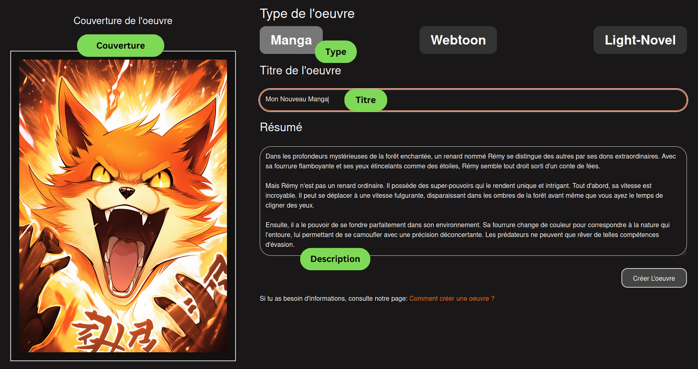
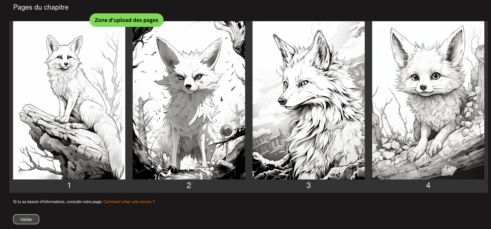
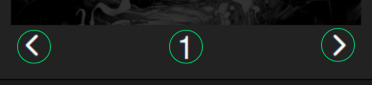

Pour créer une oeuvre, aller sur le bouton publier.
Voici la page de création d'oeuvre !
La couverture sera affichée dans les resultats de recherche ou dans l'accueil. Elle donne un premier apperçu de l'oeuvre. La banière quant à elle est affichée sur la page de présentation de l'oeuvre
Si vous n'êtes pas auteur alors votre oeuvre ne sera pas publiée tout de suite, et sera d'abord analysée par notre équipe. Une fois que l'oeuvre est validée, alors elle sera visible de tous et les prochaines oeuvres apparaîtront immédiatement.
Nous n'acceptons pas la nudité ou la sexualité. Cela inclut notamment la nudité totale ou partielle ainsi que la description graphique des actes sexuels. Nous n'acceptons pas non plus la violence excessive ou les contenus réalisés dans l'intention de choquer et d'offenser les lecteurs. Cela inclut les scènes violentes et gores qui sont brutales et étendues/prolongées. Vous pouvez trouver plus de détail
Après avoir validé, vous allez être redirigé vers la page de création de chapitre
Pour chaque chapitre, vous pouvez choisir un titre et une couverture spécifique à ce chapitre.
Vous pouvez déposer les pages dans la partie pages du chapitre, ou clicker directement dessus pour selectionner les images.
Une fois les images séléctionnées, vous pouvez les réorganiser avec les flèches, ou en cliquant directement sur le numéro de la page pour lui en attribuer un nouveau.